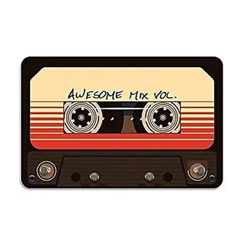

Este ano, minha empresa Jardim Sonoro completa 15 anos de curadoria musical para algumas das marcas mais legais do Brasil.
Com orgulho, posso dizer que nomes como o Grupo Boticário, Tasty Salad Shop e Mont Blanc se tornaram um pouquinho mais musicais quando nossos caminhos se cruzaram.
Essa jornada começou enquanto eu cursava Música na UFPR, e o mesmo tempo, ganhava experiência como DJ em diversos tipos de eventos. Logo, passei a ser procurado como “fazedor de playlists” por amigos, familiares e seus conhecidos.
Na verdade, desde criança eu gostava de passar tardes criando mixagens em fita K7 no estéreo do meu pai.

A vocação virou demanda — para lojas, bares e restaurantes — e logo me vi abrindo uma empresa. Na hora de escolher o nome, estava terminando de ler A Afinação do Mundo, de Murray Schafer. Um dos capítulos citava o termo Jardim Sonoro. Foi um estalo imediato. E assim nasceu o CNPJ: Jardim Sonoro Produções.
No livro de Schafer, Jardim Sonoro é um local onde se escutam apenas sons da natureza.
No meu Jardim Sonoro tem muito Rock, Jazz, Blues, Soul, House, Dub, Samba...
O trabalho de Music Branding consiste em pesquisar música diariamente e realizar curadorias específicas para cada cliente.
Quanta música é suficiente?
A música tem um papel essencial na vida — para muitos, é tão vital quanto respirar. A ciência mostra que ela ativa todo o sistema límbico, responsável pelas emoções e pelo controle da memória1.
Além disso, há evidências de que a música foi uma das primeiras formas sofisticadas de comunicação e expressão humana2, antecedendo a linguagem falada. Ela transmite emoções, intenções e conecta pessoas de maneira simbólica e profunda.
Essa força ancestral torna a música uma ferramenta poderosa — tanto na vida pessoal quanto nos negócios.
O trabalho de curadoria musical envolve acompanhar selos, publicações, comunicadores da área e alimentar continuamente um bancos musicais com mais conteúdo.
Uma trilha sonora bem escolhida transforma o ambiente, e fortalece o vínculo com a marca, cada faixa é uma peça na construção da atmosfera desejada.
No fim do dia, faço isso porque amo música. Acredito que uma canção pode transformar o seu dia — e talvez o mundo.
Uma música que representa bem essa sensação:
Beatles – Here Comes The Sun
A letra, “Aqui vem o Sol, meu bem” pode ser sobre renascimento, revelação, ou sobre o momento mágico da criação musical.
Essa versão faz parte da trilha do filme Yesterday (2019), cujo argumento propõe uma brincadeira: como seria o mundo sem as músicas dos Beatles?
E eu gostaria de finalizar aqui com a pergunta: O que seria de nós sem as músicas que amamos?
-
Lutz Jäncke. Music, memory and emotion. https://pmc.ncbi.nlm.nih.gov/articles/PMC2776393/ ↩
-
Benítez-Burraco, A., & Nikolsky, A. (2023). The (Co)Evolution of Language and Music Under Human Self-Domestication. Human Nature, 34(2), 229–275. https://pmc.ncbi.nlm.nih.gov/articles/PMC10354115/ ↩